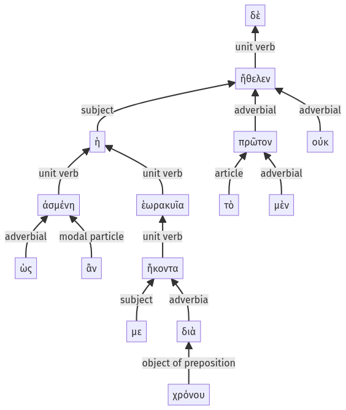

Lysias, Oration 1, 1.12.20-1.12.34a
1.12.5-1.12.19a | 1.12.35-1.12.50a
Sentence 26
1.12.20-1.12.34a
ἡ δὲ τὸ μὲν πρῶτον οὐκ ἤθελεν, ὡς ἂν ἀσμένη με ἑωρακυῖα ἥκοντα διὰ χρόνου:
1 ἡ τὸ μὲν πρῶτον οὐκ ἤθελεν
2 ὡς ἂν ἀσμένη
3 με
2 ἑωρακυῖα
3 ἥκοντα διὰ χρόνου
ἡ δὲ τὸ μὲν πρῶτον οὐκ ἤθελεν, ὡς ἂν ἀσμένη με ἑωρακυῖα ἥκοντα διὰ χρόνου:
Highlighting:
- connecting words
- unit verb
- subject
- object
Color code:
- independent clause (level 1, intransitive verb)
- circumstantial participle (level 2, intransitive verb)
- circumstantial participle (level 2, transitive verb)
- participle in indirect statement (level 3, intransitive verb)
